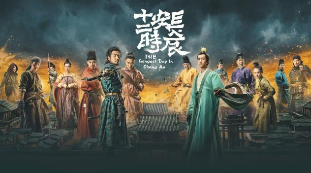
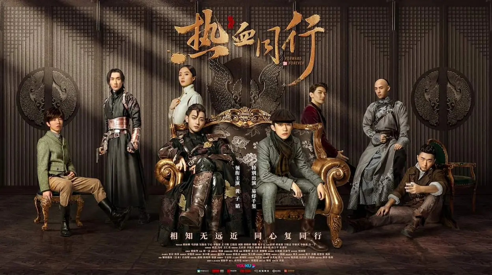

电视产品

长安十二时辰
张小敬（雷佳音 饰）出身唐朝军人，之后退伍委任唐城地方安保“不良人”，长期协调维护地方安全工作，后因处事不当违反唐律被关押狱中。负责唐城保安工作的靖安司发现了混入唐城的可疑人员，由于张小敬对事发地点人事与地理的熟悉，靖安司特例委派张小敬戴罪立功、侦破此案。经过张小敬的一番调查，发现敌人的阴谋是为了在上元节晚上的集会中制造混乱。距离上元节花灯大会只剩下短短的几个时辰了，张小敬必须在上元节花灯大会前抓住搞破坏的刺客。在调查与追捕中张小敬发现靖安司中有敌人的内应，为揭穿背后主谋，阻止破坏的发生，张小敬一次次与敌人斗智斗勇。

热血同行
清末乱世，留洋归来的贝勒爷崇利明（黄子韬饰），邂逅了初到京城的平民少年阿易（易烊千玺饰），邀其加入特殊宫廷护卫组织：艳势番。清廷风云突变，崇利明与阿易集结七位热血青年重组艳势番，迎来新生。众人赴四川、奔上海、保和谈、斗洋人，以青年的热血对抗无边黑暗，他们面对动荡时代的艰难困阻，却始终不变爱国爱民之志，始终不减热血同行之心。最终，阿易寻找到了新的理想，崇利明亦与阿易联手，成为历史和平过渡的护航者，见证了新时代的来临思美人
中国战国时期，群雄争锋。生于名门的屈原（马可饰），机缘巧合爱上了民间女奴莫愁女（张馨予饰）。然而，身处内忧外患、危机重重的楚国，二人虽相知相恋，却不能相守相依。为了冲破命运的桎梏，二人不畏门第之别，相爱相惜，在同恶霸与权贵的斗争中卷入了宫斗权争、家国情仇的漩涡。与此同时，身负宏才大略的屈原，一步步踏上了拯危救国、九死不悔的旅程。有心报国，无力回天，屈原终万念俱灰，痛沉于汨罗江；莫愁女则驾舟去远，从此荡舟江湖我们的少年时代
面对由种子选手组成的中加中学棒球队，月亮岛高中惨败。看着毫无斗志的月亮岛队员和毫不关心比赛的教练陶西，青春热血的高一新生班小松冲（王源饰）上了球场。这个不知道哪里来的傻小子居然凭着一己之力为月亮岛拿下一分。然而就在班小松誓要“重振月亮岛”的时候，中加休息区里一直在睡大觉的邬童（王俊凯饰）悠悠哉哉地走到赛场上，一击全垒打，击碎了班小松的所有幻想。月亮岛不止输了比赛，连球队都面临解散的危险。而教练陶西居然举起双手支持解散棒球队。为了拯救棒球队，班小松不顾邬童的冷嘲热讽，一心求合作，再加上学霸尹柯（易烊千玺饰）加入，陶西答应了重建棒球队。可就在此时，十分严厉的安谧突然空降成为月亮岛的教导主任整顿校务，百般阻挠成立球队，最终通过班小松等三位同学和陶西老师的团结努力，月亮岛中学队终于再次登上了全国大赛的舞台。